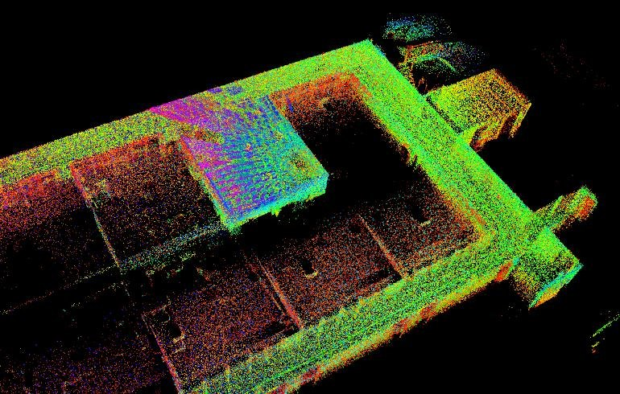
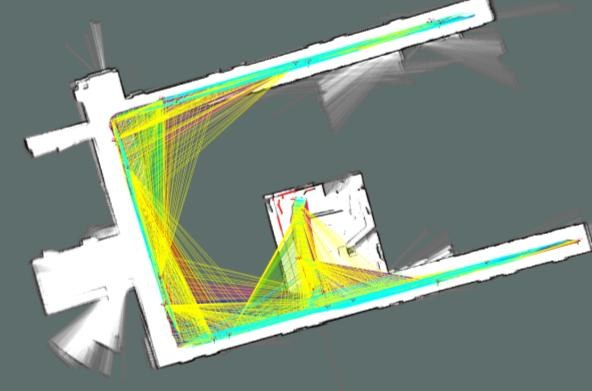
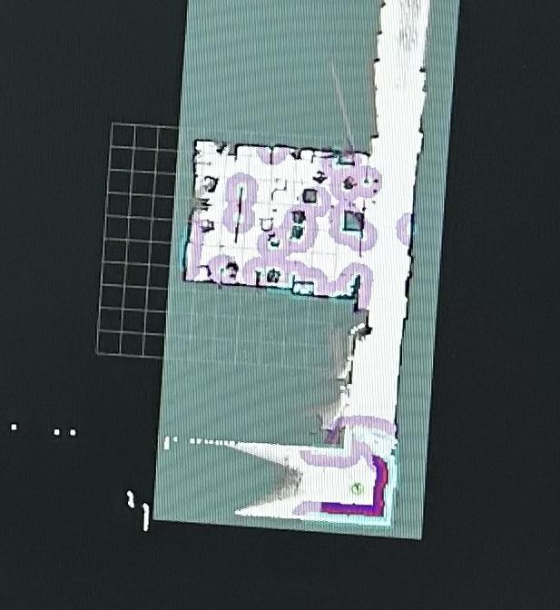
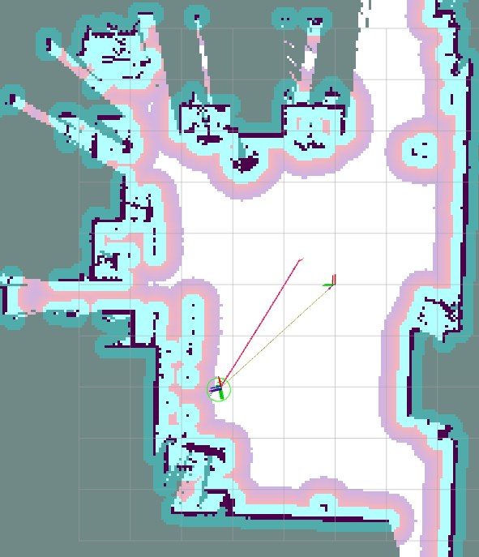

2D LiDAR SLAM Localization





This project focused on autonomous robot localization using a TurtleBot3 Burger, ROS 2 Jazzy, Ubuntu 24.04, and LiDAR MID360. I implemented LiDAR-based 2D SLAM and path planning in part of a department building.
During the experiments, the generated map failed to remain fixed and
rotated due to instability in IMU-related pose estimation. I diagnosed
the issue and improved mapping stability by modifying the
tracking_frame configuration in Cartographer.
Through this experience, I learned that understanding the relationship between sensor frames, pose estimation, and mapping results is more important than simply running an algorithm. I also handed over the generated map and Nav2 pipeline to the simulation team, supporting smooth follow-up simulation and validation work.